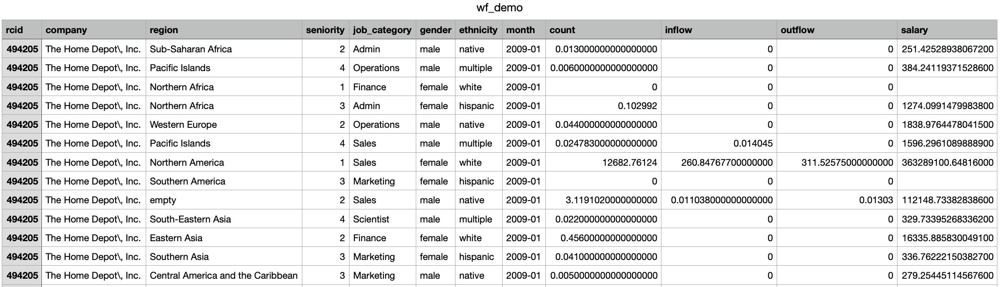
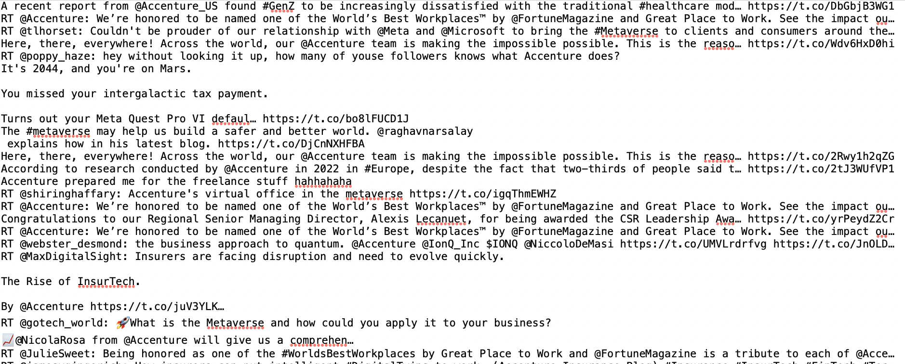
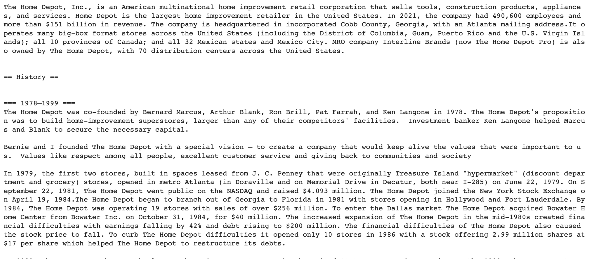

Data Gathering
I gathered three main sets of data--3 sets of workforce record data from Revelio labs, 6 sets of Tweets from Twitter via API, and 6 sets of Wikipedia text data via API. Please find my gathering_Twitter_R.Rmd and gathering_py.ipynb files in my GitHub code folder for API codes.
Workforce Record Data from Revelio Labs
My primary dataset is record workforce dynamic data retrieved from Revelio Labs.
I was determined to find company-level demographic data since the data would help me examine the topic best. I was disappointed when I conducted the data gathering process and realized that it was very difficult to discover company-level employee demographics data, which is understandably sensitive and thus inaccessible. I first tried and exhausted other options in finding company-level demographic data, including attempting using Glassdoor and Indeed APIs. I even contacted employees and Glassdoor and Indeed to check if they have API access, to no avail, and learned from them that the data is not publicly available.
When I felt like I exhausted all my options, I came across Revelio Labs--a startup founded on the basis that workforce dynamic data should be open and accessible. Revelio Labs specifically builds tools that ingest, integrate, and display publicly available workforce dynamic data.
I felt very lucky to have come across Revelio Labs, but quickly learned that they does not have open or public access to their backend data. As a result, I cold-messaged several of their employees on LinkedIn. Paulina Aceves, Research Analyst at Revelio Labs, responded and sent me three large samples of Revelio Labs' employee workforce demographic data.
Together, the three datasets from Revelio Labs totalled 28.6 million rows of data and 4.67 GB of data of employees representing six public companies--Goldman Sachs, Apple, Bristol Myers Squibb, Home Depot, Accenture, and Databricks. That is why I am unable to host the data on GitHub or GU Domains, and have linked the AWS downloading link to the data in the data tab. Please find screenshots and descriptions of the data below:
1. First, we have workforce dynamics broken down by demographics. There are 7.4 million rows of data with distinct columns 'company', 'region', 'seniority', 'job_category', 'gender', 'ethnicity', 'month', 'count', 'inflow', 'outflow', and 'salary'.

2. Next, we have workforce dynamics broken down by role. There are 6.8 million rows of data and the csv file is 1.16 GB large.

3. Finally, we have workforce dynamics broken down by geographic. There are 14.6 million rows of data and the csv file is 2.39 GB large.
Tweets Text Data via API in R (link to code)
To further understand workforce dynamics and sentiment, I gathered Tweets data via Twitter API in R. I used the R packages rtweet and twitteR in particular to scrape Tweets via API.
I read Professor Nakul's consumer key, consumer secret, access token, and access secret from a .txt file.
I then used the rtweet package to scrape Tweets data from Twitter.
Finally, I used the twitteR package's searchTwitter() function to scrape Tweets data from Twitter.
In the searchTwitter() function I specified the following parameters: size n=200 to scrape 200 tweets for each company, seach terms are the six respective companies we have record data for--Goldman Sachs, Apple, Bristol Myers Squibb, Home Depot, Accenture, and Databricks--and langauge is English.
I used the twListToDF function to convert the six different groups of Tweets into six respective dataframes.
Finally, I unlisted each dataframes then saved them as separate text files.
Please see the following snapshot of Accenture's raw text files.

Wikipedia Text Data via API in Python (link to code)
In addition to Tweets data, I also gathered Wikipedia text data using Wikipedia API in Python.
First, I downloaded necessary packages, including the Wikipedia package in Python.
Then, I used the wikipedia.page() function, specifying the title to be each of the six public companies for consistency--Goldman Sachs, Apple, Bristol Myers Squibb, Home Depot, Accenture, and Databricks.
Finally, I printed the content of the Wikipedia page to confirm I have the right data.
Please see the following screenshot of Home Depot's Wikipedia page printed in Python:

|